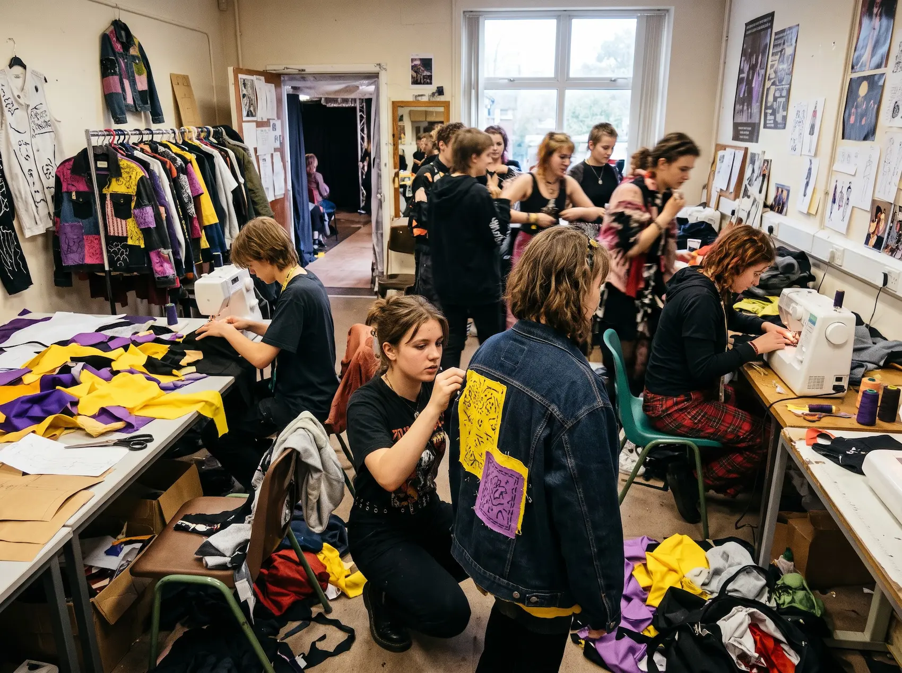
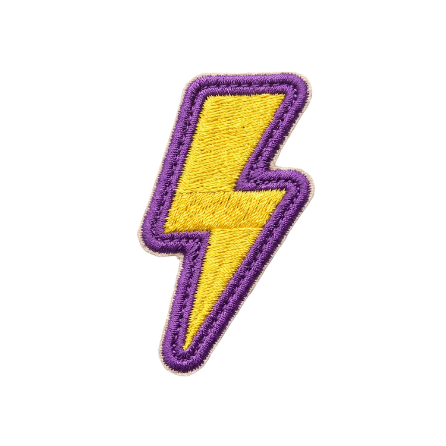

Backstage-Chaos & Styling
Hinter dem Vorhang wird bis zur letzten Sekunde mit Sicherheitsnadeln, Textilfarbe und Glitzer-Tapes gearbeitet. Die Models kommen aus Jugendzentren und Schulen der Stadt.
Das fiktive Programmkonzept umfasst sechs Stunden Mode, Musik und Mitmach-Action. Es zeigt beispielhaft, wie ein Abend mit Runway, DIY-Patch-Lab und Live-Beats aussehen könnte.
| Uhrzeit | Programmpunkt | Zone | Was dich erwartet |
|---|---|---|---|
| Doors Open & DIY-Patch-Lab | Foyer & Hof | Ankommen, Sticker-Tauschwand checken und an vier Näh- und Siebdruck-Stationen alte Shirts pimpen. | |
| Runway Block 1: „Trash to Treasure“ | Main Stage | Zwölf Teen-Designer:innen zeigen Outfits, die komplett aus Zelten, Sicherheitsgurten und Vintage-Jeans genäht wurden. | |
| Sneaker-Customizing Battle | Workshop-Ecke | Vier junge Artists bemalen in 45 Minuten weiße Sneaker live vor Publikum – ihr stimmt per Applaus über den Sieger ab. | |
| Runway Block 2: „Neon Zine Rebellion“ | Main Stage | Schrille Layering-Looks in Lila, Gelb und Schwarz mit handgeschriebenen Slogans, Ketten und Oversize-Schnitten. | |
| Open Catwalk für alle Besucher:innen | Main Stage | Dein Moment im Scheinwerferlicht! Melde dich vor Ort an und präsentiere dein eigenes Streetwear-Outfit auf dem Laufsteg. | |
| Best Cut Award & Aftershow-Beatset | Main Stage | Pokalvergabe an die beliebteste Kollektion des Abends, danach Tanzfläche frei mit DJ Kira (Hyperpop & Rap). |

Hinter dem Vorhang wird bis zur letzten Sekunde mit Sicherheitsnadeln, Textilfarbe und Glitzer-Tapes gearbeitet. Die Models kommen aus Jugendzentren und Schulen der Stadt.

Bring eine Jeansjacke oder einen alten Hoodie von zu Hause mit. Garn, Nieten, Stoffreste und Schablonen stehen in der Customizing-Zone bereit.